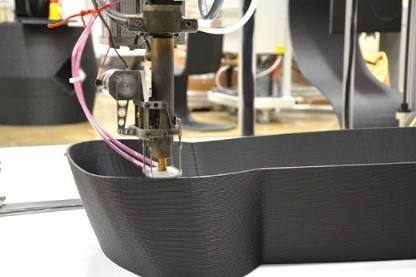

In this Issue
Partner Spotlight
AMO Success Stories
- Innovators Find a Home with Cyclotron Road
- Manufacturing Industry’s Role in Grid Modernization
- The Future of Robotics Scholars
- IACMI Announces Summer Internship Program
A Message from the Director
Dear friends of AMO,
The Advanced Manufacturing Office's three pillars (Facilities, R&D Projects, and Technical Assistance) each marked major accomplishments in 2015, and we look forward to the exciting opportunities that 2016 has to offer. I am particularly excited about the future role that Information Technology (IT) will play in innovation in the advanced manufacturing industry, and how AMO can provide support to industry partners to facilitate that innovation. By harnessing the unique power of IT, the manufacturing industry can model and streamline processes to make them more energy efficient and rapidly prototype ideas, which can eliminate costly and energy-intensive practices. "Through programs like HPC4Mfg, AMO collaborates with industrial partners, the network of national laboratories, and other research partners to utilize cutting-edge technology to provide broadly applicable solutions to critical problems facing the manufacturing industry. Recently, AMO and Lawrence Livermore National Laboratory announced $3 million for ten new projects that will enable private-sector companies to use high performance computing resources at the department’s national laboratories to tackle major manufacturing challenges. ”
Thank you for joining us for another year, and I look forward to sharing our challenges and successes with you in 2016.
Mark Johnson
Industry News
What’s New in Advanced Manufacturing?

While 2015 was an excellent year for advancements in energy efficiency and renewable energy in the manufacturing industry, 2016 provides an opportunity for industry leaders to renew their commitment to reduce energy consumption and continue making strides in innovation and implementation of new measures. Coming out of November's COP 21 conference in Paris, the United States joined 19 other countries in Mission Innovation, a commitment to double funding for research and development in clean energy over the next five years. The U.S. industrial sector alone spends approximately $200 billion on energy each year, meaning that innovative technologies that make manufacturing processes more efficient could have a huge impact on total energy consumption. With energy-efficient upgrades to manufacturing processes, manufacturers can save money while at the same time contributing to our clean energy mission.
Technologies such as additive manufacturing, more commonly known as 3D printing, provide opportunities to rapidly and cost-effectively create prototypes for new technologies, providing a reduction in lead times and energy consumption. A major highlight of 2015, and more specifically of COP 21, was the 50th Anniversary Shelby Cobra. The Cobra was an experiment in Big Area Additive Manufacturing (BAAM) and contained roughly 500 lbs of 3D printed parts. The design, manufacturing, and assembly process took only 6 weeks, including 24 hours of print time - compared to processes that would normally take several months to prototype a vehicle of this size.
Additive manufacturing not only showcases the potential to speed up prototyping processes across the manufacturing industry, but it also allows for incredible innovation with materials that are stronger, lighter, and less expensive than materials used in traditional methods.
Partner Spotlight
AMO Technology Advances Wind Turbine Research

Researchers from AMO, Wind Program, Oak Ridge National Laboratory (ORNL), Sandia National Laboratories (SNL), and other organizations are working together to identify and develop solutions to reduce costs and time associated with manufacturing wind turbines, experiment with new capabilities, and improve design flexibility. This includes the development of a new, more efficient process which uses Big Area Additive Manufacturing (BAAM) to print molds for wind turbine blades.
BAAM is a state of the art 3D printing system developed through a partnership between ORNL and Cincinnati Incorporated, and is housed at ORNL’s Manufacturing Demonstration Facility. The BAAM System is 500 to 1,000 times faster and capable of printing polymer components 10 times larger than today’s industrial additive manufacturing machines. AMO already had expertise in the powerful BAAM system and recognized an opportunity to utilize this technology to address challenges faced by the Wind Program.
As the wind industry looks to experiment with larger turbine blades and new shapes, both prototyping and transportation become more complicated problems. One costly and energy-intensive aspect of making wind turbine blades is the creation of the plug from which the mold is made, which makes it very expensive to produce new molds for prototypes and testing. Instead of outsourcing the mold production, AMO is using cutting-edge additive manufacturing technology to meet the Wind Program’s needs.
In addition to eliminating the need for a plug, using additive manufacturing also allows manufacturers to incorporate features and capabilities not available through other methods. Because the additive manufacturing technology is scalable, it can also be applied to other wind turbine components. The successful completion of the project would pave the way for vastly simplified methods of mold manufacturing in the wind industry, and demonstrate the value of BAAM as a cross-cutting technology in the clean energy industry. Through strategic partnerships like this, AMO helps the manufacturing industry develop and implement cutting edge clean energy technologies.
To read more about this partnership, visit our blog.
Hilton Joins Superior Energy Performance Partners
On December 21, 2015, Hilton Worldwide became the first hospitality company to have hotels certified under the Superior Energy Performance® (SEP™) program. SEP is a certification program that builds on ISO 50001 standards, requiring program members to not only meet ISO 50001, but also improve their energy performance by at least 5% over three years. Hilton Worldwide has three certified hotels located in Washington, D.C., Waikiki, HI, and San Francisco, CA. The Washington, D.C. location will be the host site for the DOE's Better Building Summit this May.
Hilton's certification marks a huge milestone for the SEP program because program partners have traditionally been manufacturers. Hilton's aggressive energy program and commitment to energy-efficiency in the hospitality sector sets the stage for other industries to implement policies and programs to reduce energy consumption. Although the DOE wants to see SEP continue to grow in the manufacturing industry, there are also opportunities to bring SEP to new markets such as university campuses, water and wastewater treatment sites, Department of Defense contractors, DOE's network of national laboratories, and other sectors. SEP is now available to all commercial sector companies that are leading the way in energy management and productivity improvement.
AMO Success Stories
Innovators Find a Home with Cyclotron Road
 Cyclotron Road is a public-private partnership founded by Lawrence Berkeley National Lab and supported by AMO. This project, which launched in 2014, supports critical technology development and helps top entrepreneurial researchers to advance clean energy technologies beyond the research phase, while identifying the most suitable business models, partners, and financing mechanisms for long-term impact.
Cyclotron Road is a public-private partnership founded by Lawrence Berkeley National Lab and supported by AMO. This project, which launched in 2014, supports critical technology development and helps top entrepreneurial researchers to advance clean energy technologies beyond the research phase, while identifying the most suitable business models, partners, and financing mechanisms for long-term impact.
Many of our nation’s best and brightest are at risk of turning their efforts away from the pursuit of groundbreaking energy solutions because of lack of funding for early-stage energy technologies. By leveraging the DOE's unique national lab facilities and expertise, Cyclotron Road significantly reduces the time and cost of pre-commercial technology development.
Innovators selected to join Cyclotron Road by a competitive application process are given time and resources to mature breakthrough energy materials and manufacturing technologies, with the flexibility to target high-impact commercial pathways with partners from across the startup, corporate, and non-profit sectors.
Cyclotron Road has celebrated major milestones in the last year. In November, two projects from Cyclotron Road's first cohort of innovators were selected as awardees for the 2015 Advanced Research Projects Agency-Energy (ARPA-E) OPEN award. Additionally, the 2016 Forbes 30 Under 30 list for the energy sector recognized two Cyclotron Road members: project lead Marcus Lehmann and Opus 12 co-founder Nicholas Flanders.
Given early project success, Cyclotron Road will expand its energy innovation platform to bridge the gap between scientific inquiry and technology commercialization with a new team of researchers and newly established leadership council to guide their progress and project development. Cyclotron Road looks forward to announcing the second cohort of innovators this year.
Manufacturing Industry’s Role in Grid Modernization
The market has seen rapid growth in renewable resources such as wind and solar power, but the nation's current electrical grid is not ready to accommodate that success without some improvements in the reliability and security of the grid. The primary focus of grid modernization activities, up to this point, has been on integrating renewable energy and energy-efficiency in the transportation and residential markets, with the industrial sector remaining largely unchanged. The manufacturing sector's relationship with the electrical grid has been solely to buy and use power as needed, without significant engagement or efforts to help stabilize the grid.
As part of DOE's Grid Modernization Initiative, AMO hosted a Grid Modernization workshop February 10 -11, 2016 at the Embassy Suites Hotels in Austin, TX. While the workshop did not plan to address the potential business and policy issues involved in grid modernization, its focus was on the technological barriers that stand in the way of grid modernization in the industrial sector. The equipment currently in place is designed solely to deliver electricity within the walls of the plant, and is not set up to provide support to the grid. The ultimate goal of the workshop is for AMO to work with industry leaders to identify technology barriers and determine where research opportunities might exist to address those barriers and make it easier for the manufacturing industry to help support and stabilize the grid.
Workshop materials and a full report of the workshop’s findings will be available after the conclusion of the workshop.
The Future of Robotics Scholars
The U.S. Department of Energy's (DOE) Oak Ridge Institute for Science and Education (ORISE) is seeking students and recent graduates for paid internships through the DOE's Office of Energy Efficiency & Renewable Energy (EERE) Advanced Manufacturing Office. The Robotics Internship Program is soliciting current students and recent high school and college graduates who have experience in robotics competitions in high school or college.
The EERE Robotics Internship Program is a partnership between the public and private sectors to continue the development of the future robotics technical and engineering workforce. Various corporate partners across the United States will host hands-on, short-term internships where participants will perform research or other technical activities under the guidance of a mentor who is a technical staff scientist or engineer at the host facility.
Applications opened on Friday, Jan. 8, 2016, and will close on Friday, March 4, 2016.
More information as well as an online application is available on the program website: http://www.orise.orau.gov/roboticsinternship/.
IACMI Announces Summer Internship Program
In anticipation of future growth of the advanced manufacturing composites industry, the DOE’s Institute for Advanced Composites Manufacturing Innovation (IACMI) is committed to developing a pipeline of talent and leadership to meet the demands of the workforce. IACMI is offering summer internships through Oak Ridge Associated Universities (ORAU) to expose undergraduates and graduate students to cutting-edge composites and technology research.
Interns will be assigned a mentor at one of IACMI’s partner sites and will engage in hands-on learning that is more project-based than traditional academic coursework. Program participants will have an opportunity to conduct research at one of five partner sites across the United States that align with IACMI’s five shared research, development, and demonstration facilities: Composites Materials and Process, Compressed Gas Storage, Design Modeling, and Simulation, Vehicles, and Wind Turbines.
For more information on the IACMI Internship Program, visit ORAU’s website.
Applications will close at 11:59 p.m. E.S.T. on March 15, 2016.
U.S. Department of Energy – Advanced Manufacturing Office
Room 5F-065, MS EE-5A
1000 Independence Ave, SW
Washington, DC 20585
Phone: (202) 586-9488